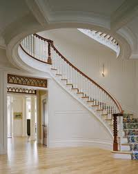
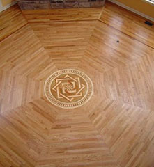

North Dakota Hardwoods Gallery Page
- Knutson House

 Mertz House
Mertz House- Odden House
- Jacobson House
- Vetter House
This stairway was built in 2009 and showcases its bold raised panel newel posts yet flows into an elegant curved railing.
A stairway of real beauty. A cascade of marble treads gracefully embraced with a rich mahogany rail and skirt accented with white turned balusters.
A stairway fit for a king. This matched two story curved stair joined seamlessly by a radiused balcony is a testament of artistic craftsmanship.
This flooring makes not only a statement but a conversation, from wow look at that to how did they do it?
A new age stairway that depicts a time of true craftsmanship was built in 2010 to resemble that of a late 1800's stairway.